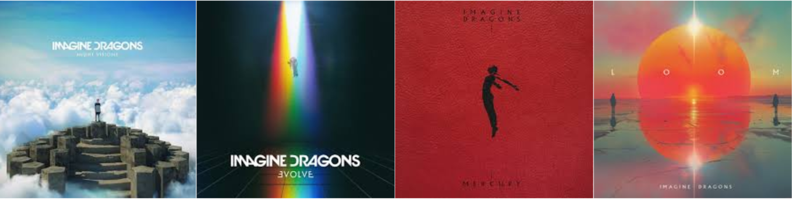
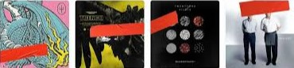
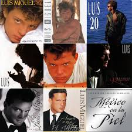

Imagine Dragons
Imagine Dragons es una banda estadounidense de pop rock originaria de Las Vegas, Nevada. Está compuesta por Dan Reynolds (vocalista, baterista), Wayne Sermon (guitarrista) y Ben McKee (bajista).
¿Por qué Imagine Dragons?
Conocí Imagine Dragons durante una etapa agitada de mi vida, cuando emprendí mi primera gira internacional con DMB y empezaba a conocer nuevas cosas. Imagine Dragons me gusta ya que tienen un estilo muy característico, melodías con diferentes sentimientos y letras profundas que en ocasiones llegan a expresar lo que siento y me dan energía para vivir. En pocas palabras, hay veces donde Imagine Dragons llega a ser como el "soundtrack" de mi vida.
Mis Favoritas
- Symphony, Mercury Act. 1. (2022)
- I'll Make It Up To You, Evolve. (2017)
- On Top Of The World, Night Visions. (2012)
- Sharks, Mercury Act. 1. (2022)
- Next To Me, Evolve. (2017)
Twenty One Pilots

Twenty One Pilots es un dúo musical estadounidense de Columbus, Ohio. La banda se formó en 2009 por el vocalista Tyler Joseph junto con Nick Thomas y Chris Salih, quienes la abandonaron en 2011. Desde su partida, la formación ha consistido en el cantante Tyler Joseph y el baterista Josh Dun.
¿Por qué Twenty One Pilots?
Twenty One Pilots estuvo presente desde hace mucho tiempo en mi vida con sus sencillos más populares como "Stressed Out" y "Ride"; sin embargo, cuando realmente saltaron a lo más alto de mis listas de Spotify fue cuando conocí a mis primeros alumnos de DMB, ya que ellos eran fanáticos de este grupo y a veces querían tocar canciones de ellos, así que empecé a escuchar más el duo y terminé siendo gran fan de sus melodías.
Mis Favoritas
- Hometown, Blurryface. (2015)
- Good Day, Scaled and Icy. (2021)
- Stressed Out, Blurryface. (2015)
- Not Today, Blurryface. (2015)
- The Line, Arcane Series. (2024)
Luis Miguel
Luis Miguel, reconocido por su estilo vocal, presencia escénica y versatilidad musical, es uno de los artistas más exitosos de Latinoamérica, lo que le otorgó el apodo honorífico de el Sol de México.
¿Por qué Luis Miguel?
Luis Miguel es un ícono de la música en México y Latinoamérica, y su estilo único y canciones memorables y con mensajes claros hacen que su música sea lo mejor en español.
Mis Favoritas
- Sabes Una Cosa, México en la Piel. (2004)
- La Bikina.
- Suave, Aries. (1993)
- Soy lo Prohibido, ¡México Por Siempre! (2017)
- La Llamarada, ¡México Por Siempre! (2017)

PLAYLISTS
Para pasar un buen rato de música y diversión, nada como una buena playlist. Acerca de mis favoritos (y demás artistas que a pesar de no haberlos mencionado, tienen un lugar en mi corazón) escogí estas playlists de Spotify para compartir.